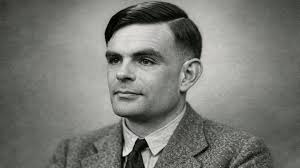
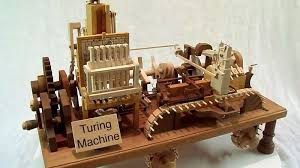

Alan Turing foi um matemático e pioneiro da computação britânico, fundamental para o nascimento da inteligência artificial através de seu famoso Teste de Turing. Durante a Segunda Guerra Mundial, ele liderou a equipe que decifrou a máquina Enigma, salvando milhões de vidas ao interceptar communications nazistas. Ele também idealizou a Máquina de Turing, conceito teórico que serve como base para o funcionamento de todos os computadores modernos. Atualmente, ele é mundialmente reconhecido como o pai da ciência da computação e um herói de guerra.

Alan Turing é considerado o Pai da ciência da computação por idealizar a Máquina de Turing, o conceito teórico que baseia o funcionamento de todos os computadores modernos. Durante a Segunda Guerra Mundial, ele liderou a decodificação da máquina Enigma, criando um dos primeiros computadores eletromecânicos do mundo. Turing também formalizou os conceitos de algoritmo e processamento de dados, além de abrir caminho para a Inteligência Artificial ao propor o famoso Teste de Turing.
Alan Turing lançou as fundações teóricas dos sistemas inteligentes ao propor a Máquina de Turing, conceito seminal que definiu as capacidades e limites do que os computadores modernos podem computar. Em seu célebre artigo de 1950, ele introduziu o Jogo da Imitação (hoje Teste de Turing), desviando a discussão filosófica sobre se as máquinas podem pensar para um critério prático de comportamento inteligente. Turing também previu o uso de redes neurais artificiais e o aprendizado de máquina, sugerindo que computadores poderiam aprender através da experiência e de modificações genéticas em seus códigos. Suas ideias pioneiras estabeleceram os pilares da Inteligência Artificial moderna muito antes da tecnologia física existir para testá-las.